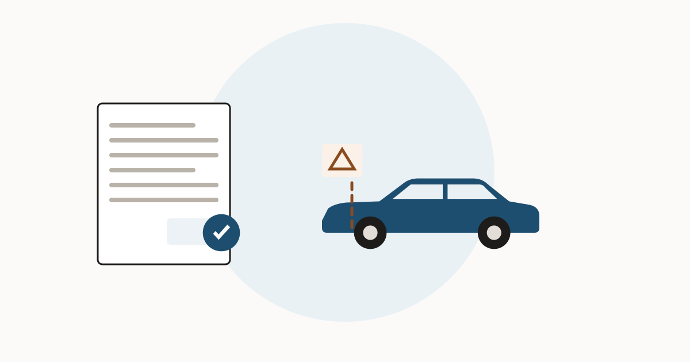

A clean title does not mean the car was never crashed

A buyer looks at a clean title and reads it as "no accidents". That is not what it certifies. A clean title means no state agency has applied a brand to this vehicle. Brands are applied when a specific, defined event gets reported — and a crash, even a serious one, does not always produce one.
What actually has to be reported
The federal rules behind the national title database set out exactly who reports what. Insurance carriers must report automobiles they have taken possession of and determined to be junk or salvage, including total losses, and they report monthly (28 CFR 25.55). Junk yards, salvage yards and auto recyclers report the vehicles they obtained, also monthly (28 CFR 25.56). States supply titling information — the VIN, the vehicle description and any brands, and odometer disclosure data — at least once every 24 hours (28 CFR 25.54).
Read that list again and notice what is missing. There is no requirement anywhere in it to report a collision, a repair, or a claim that was paid without the insurer taking the car.
"Total loss" is a financial test, not a damage test
The regulation defines a total loss as a vehicle whose repair cost, plus projected supplements, projected diminished resale value and rental reimbursement, exceeds the vehicle's pre-accident value minus what it would fetch as salvage (28 CFR 25.52). Every term in that calculation except the repair cost is about money, not about severity.
The practical consequence is uncomfortable. Two cars take the same hit. The older, cheaper one is written off, gets a salvage brand, and every future buyer can see it. The newer, more valuable one is repaired, keeps its clean title, and looks untouched on paper forever.
Title brands are the floor, not the ceiling. Accident, auction and service records are where repaired damage shows up.
Run a VIN check at VinCheckUp Advertising disclosure: the link above is an affiliate link. If you buy a report through it, this site may earn a commission at no extra cost to you. It does not change what is written on this page.Damage that leaves no record anywhere
- Repairs paid out of pocket. No claim, no insurer, no report. This is common at the low end of a deductible and common with drivers protecting their premium.
- Claims where the insurer never took the car. The reporting duty attaches to automobiles the carrier possessed and determined to be junk or salvage. A repaired-and-returned car is neither.
- Work at a shop that reports to nobody. Commercial history reports carry service records only from participating shops.
What covers the gap
| Question | Where the answer comes from |
|---|---|
| Was it ever written off, in any state? | Title and salvage records — a history report |
| Was it in a crash that was claimed but repaired? | Accident and insurance-claim records, where reported |
| Has a body panel been off this car? | The car itself — see the VIN labels on body panels |
| Was there structural repair? | An inspection on a lift — see signs of frame damage |
None of this makes a clean title worthless. It is a real and useful filter: it rules out the cars that were written off. It simply does not answer the question most buyers think they are asking.
What to do with this
- Treat a clean title as the starting point, not the conclusion. See what the brands mean.
- Pull a history report for accident, auction and service entries that never touched the title.
- Put the car on a lift. A pre-purchase inspection finds repaired damage that no database was ever told about.
Check the title history across states first, then inspect what the paperwork cannot show.
Run a VIN check at VinCheckUp Advertising disclosure: the link above is an affiliate link. If you buy a report through it, this site may earn a commission at no extra cost to you. It does not change what is written on this page.